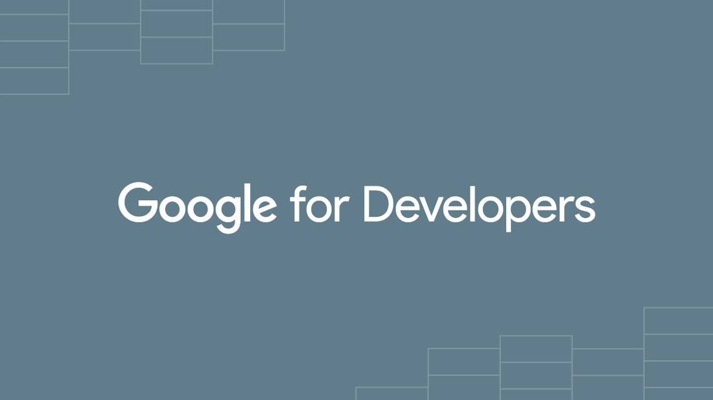
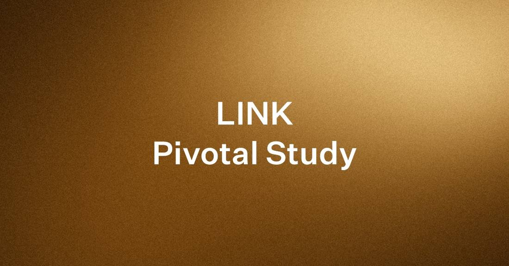
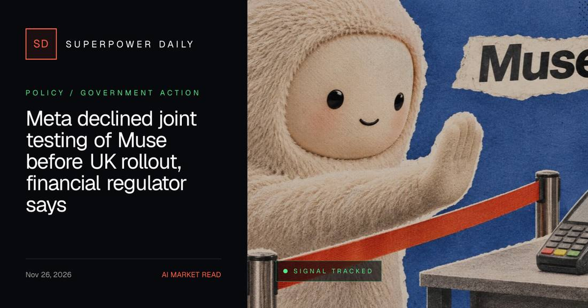
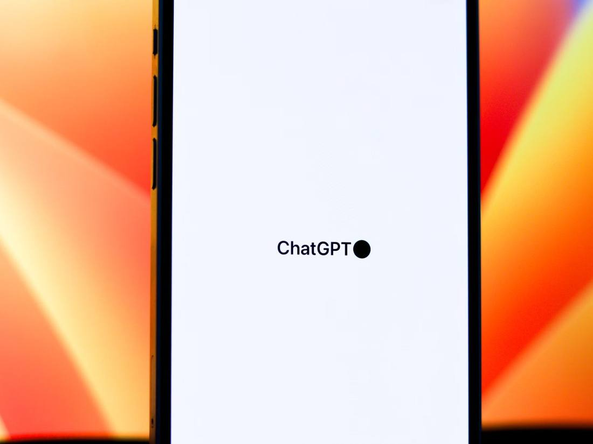
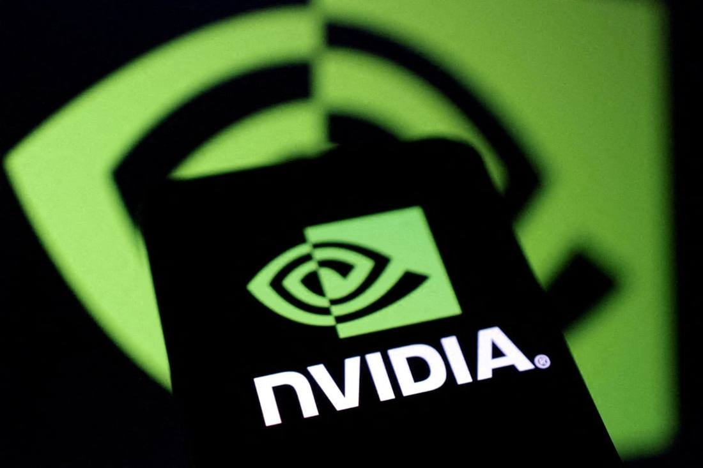
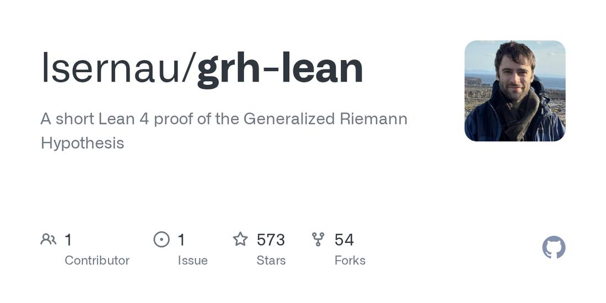
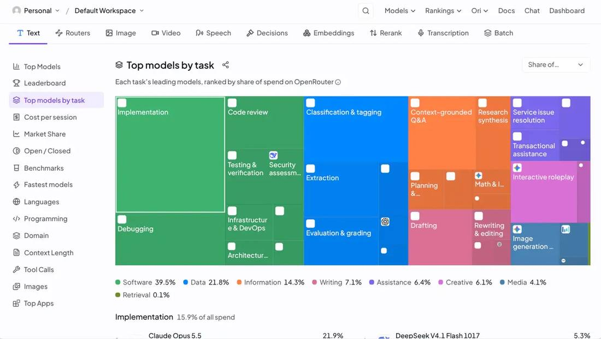
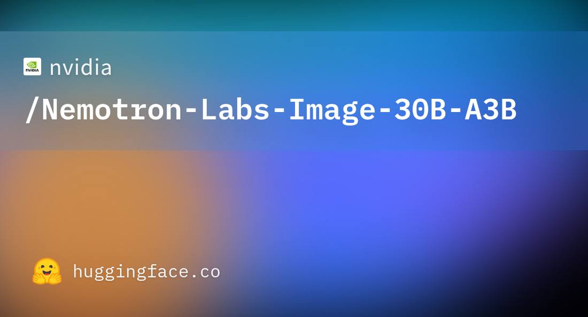
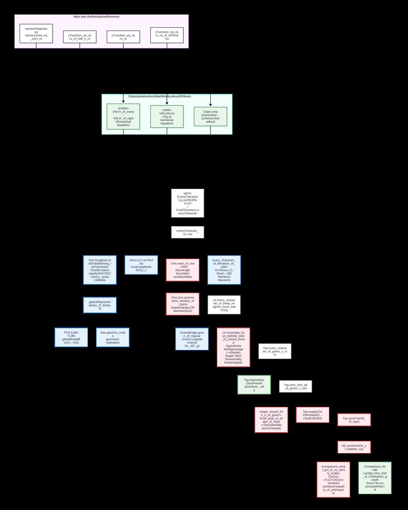

Facts first
Reporting and analysis are kept apart on every page. Sources and uncertainty are stated, not buried.

Google made its Workspace Model Context Protocol servers and the official Workspace CLI generally available on November 24, 2026, alongside standardised Standard and Scaled usage tiers, requiring AI agents to use the MCP servers or the CLI to access Workspace data from February 1, 2027.

Neuralink Wins FDA Approval for First Pivotal Brain-Implant Trial in ALSNeuralink received FDA approval to launch the LINK Pivotal Study on November 25, 2026, the first pivotal trial for an implantable brain-computer interface in the United States, evaluating the safety and effectiveness of its system in individuals with severe paralysis caused by ALS.
Meta Declined the FCA's Offer to Test Muse Before Its UK LaunchMeta declined the UK Financial Conduct Authority's offer to jointly test its Muse personal assistant in the regulator's sandbox before the November 24 UK launch, WIRED reported on November 26. The FCA wanted to examine how the agent behaves with ordinary customers, especially around payments. The Competition and Markets Authority had already made Meta revise Muse's UK terms, and the four UK regulators are now monitoring the rollout, with a public form for reporting problems.
OpenAI Fixes GPT-6.2 Billing Error; Users Hit Limits Up to 40% SoonerOpenAI said a billing mistake at the launch of GPT-6.2 incorrectly discounted Astra and Sol usage for most users. With the fix, the same work uses more of a plan's allowance: users reach their limits 40% faster on GPT-6.2 Astra and 25% faster on Sol than last week. Other models are unaffected, OpenAI will not charge for past usage, and every Go, Plus, Pro and Business account gets one banked reset.
Nvidia Halts AI Server Shipments to Four Southeast Asian States, FT ReportsThe Financial Times reported on November 26, 2026 that Nvidia told its manufacturing partners to stop shipping servers built with its AI chips to Malaysia, Singapore, Thailand and Indonesia, after new US export-licence rules took effect on November 19. Dell and Supermicro have told buyers in the four countries their orders will not ship. It is unclear whether the halt is temporary; Reuters could not immediately verify the report, and the companies did not immediately comment.| WORLD & POLICY | 34 |
| MARKETS & INDUSTRY | 172 |
| AI FRONTIER | 386 |
| ROBOTICS & AI | 42 |
| WEB3 INFRASTRUCTURE | 6 |
| RESEARCH & SCIENCE | 11 |

Shorter Riemann Proof Clears Full Verification as Paranoid Comparator Signs OffAndrew Sutherland's MIT verification page for the shorter Lean proof of the Riemann Hypothesis, updated at 02:50 UTC on November 26, 2026, now reads: "All checks have finished." The lake comparator --paranoid run under Lean v4.35.0 passed for both editions of Luke Sernau's grh-lean proof, and the compact edition passed independently on two machines. The proof has passed machine checks only; no mathematician has read it through, and no paper accompanies it.
MiniMax Named as the Lab Behind the Leaked AI PromptsDragos chief research officer HD Moore has publicly identified MiniMax as the Chinese AI developer behind his firm's investigation into AI data security. Secret links planted in prompts sent to MiniMax were opened days later from Singapore, appeared in a Feishu chat channel and were opened from Beijing and Shanghai, and drew unusual activity from the Moscow region. MiniMax says its own security system opened some links to check for threats and found no evidence customer conversations were disclosed.
NVIDIA Quietly Posts Open Weights for Its First Serious Image GeneratorNVIDIA has released open weights for Nemotron-Labs-Image-30B-A3B, an autoregressive image generator, on Hugging Face. The model has 30 billion parameters with 3 billion active per token and is the raster component of NVIDIA's Nemotron-Labs-VisualCreation framework. The weights are licensed for non-commercial research and evaluation only, and the agentic harness behind the headline benchmark scores has not been released.
Anthropic's Shorter Riemann Proof Cuts 17 Million Lines to 76,000Luke Sernau, with colleagues at Anthropic and Claude, posted a much shorter Lean proof of the Riemann Hypothesis and the Generalized Riemann Hypothesis for Dirichlet L-functions on November 25, 2026. The compact edition runs to about 76,000 lines, against about 17 million in the original Alpöge–Claude proof, with identical theorem statements. Independent checks of the shortened proof, including a paranoid lake comparator run, have passed.DeepMind Hands AI Agents Part of Its Compute to Run Gemini ExperimentsGoogle DeepMind lets AI agents control part of its compute to run experiments for the next Gemini model, VP of Research Koray Kavukcuoglu said on the company's podcast. The agents decide which experiments to run, while full recursive self-improvement remains far off, and DeepMind does not reward the agents' internal chain of thought during training so their intentions stay reviewable.OpenAI Merges Chat and Work Into One Meter; Heavy Users May Hit Limits SoonerOpenAI has started rolling out a combined Chat and Work experience in ChatGPT to a small group of Pro subscribers, TechCrunch reported on November 25, 2026. Starting in December, Plus, Pro and Business subscribers will share a single token-based usage allowance across ChatGPT and Codex, while Instant chats will not count toward the allowance. OpenAI Tests Private Inference, Sealing Business Prompts From ItselfOpenAI chief executive Sam Altman said on November 25, 2026 that the company is testing Private Inference, part of OpenAI Private Intelligence, with a small group of business customers. The feature runs queries on isolated hardware that OpenAI says it cannot access, so companies can use its most powerful models without OpenAI seeing their prompts or responses.
OpenAI Tests Private Inference, Sealing Business Prompts From ItselfOpenAI chief executive Sam Altman said on November 25, 2026 that the company is testing Private Inference, part of OpenAI Private Intelligence, with a small group of business customers. The feature runs queries on isolated hardware that OpenAI says it cannot access, so companies can use its most powerful models without OpenAI seeing their prompts or responses.Policy, geopolitics and macro forces — the events that move the map.
OPEN DESK → · 34 REPORTS02Capital, deals and industry structure, with every number sourced.
OPEN DESK → · 172 REPORTS03Models, agents and compute — verified against primary sources before publication.
OPEN DESK → · 386 REPORTS04Humanoids, embodied AI and automation — real deployments, not demos.
OPEN DESK → · 42 REPORTS05Blockchain infrastructure and industry facts. No investment advice.
OPEN DESK → · 6 REPORTS06Papers, labs and frontier science, with the limits of each claim stated.
OPEN DESK → · 11 REPORTSOne sponsor slot per cycle across the briefing and the homepage. Pricing steps up with real traffic. Audience numbers are never inflated.
Reporting and analysis are kept apart on every page. Sources and uncertainty are stated, not buried.
Key facts link back to the publishing institution and the original document, with page screenshots on file.
Each report carries a screenshot of its primary source. One click takes you to the original.
Events, timelines and entities are linked, so a headline becomes a position in a larger picture.
We monitor official announcements, filings, wire reporting and front-line social signals, then merge duplicate coverage of the same event.
Social posts are leads, never sources. Each event is confirmed against its primary source and a second independent report before publication.
Background, timelines and related entities are attached to every event, and follow-ups are published as updates to the same record.